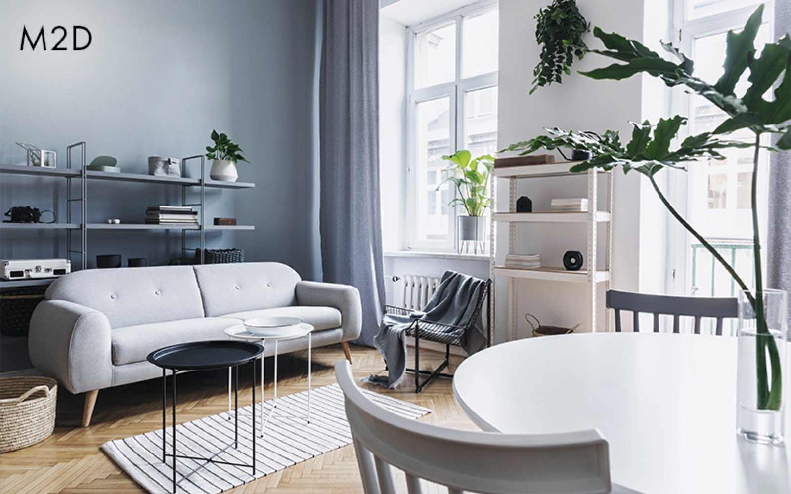
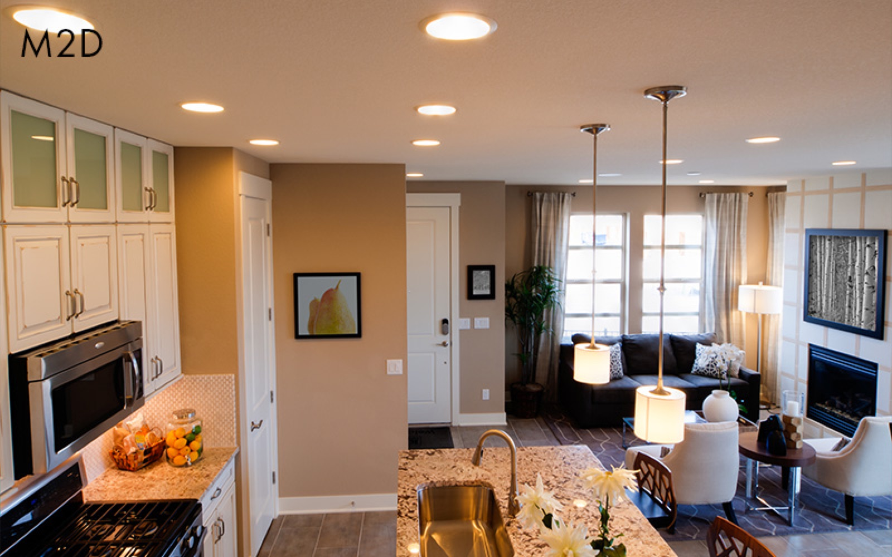
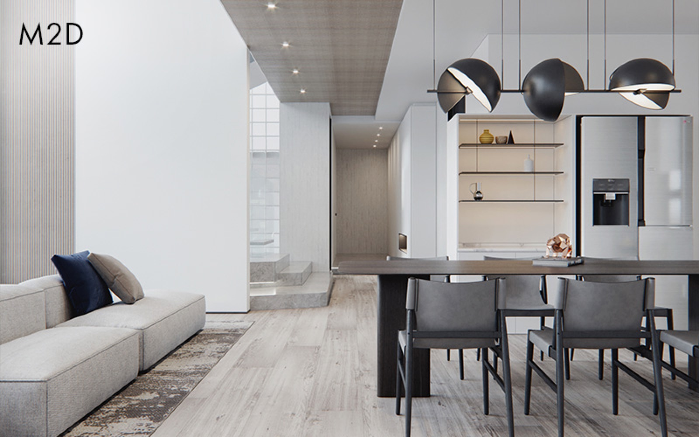
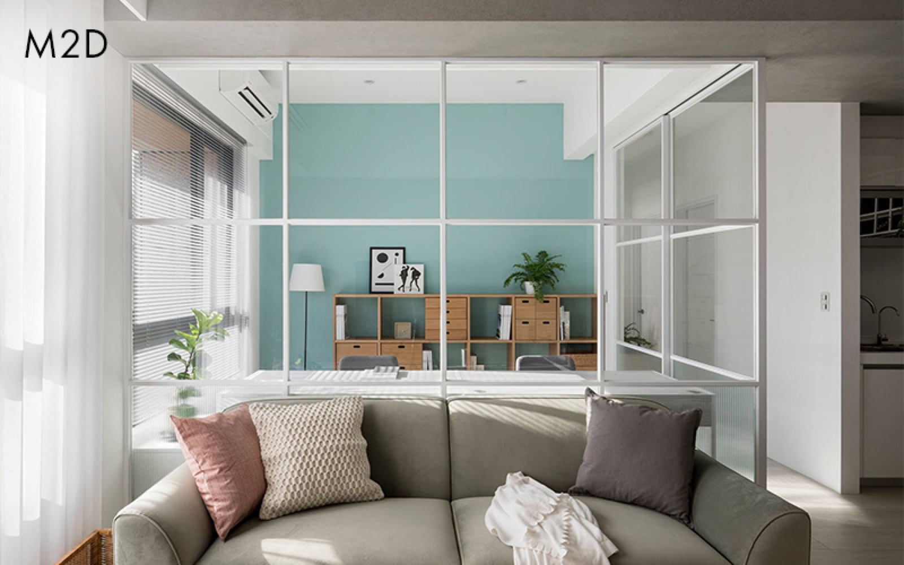
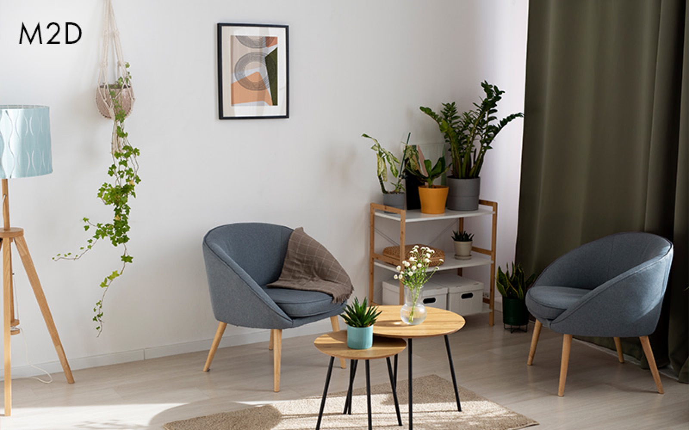

H2 H2 Key Takeaways
Smart zoning strategies can improve both flow and function in narrow terrace house designs.
Use furniture, lighting, and visual elements to define each zone without closing off space.
The right design tools, such as glass partitions, open shelving, and texture, can make narrow layouts feel more cohesive and spacious.
In Singapore, many landed homes, especially terrace houses, tend to have long and narrow layouts. While this offers a generous footprint, it also poses a design challenge: how do you organise the space without making it feel cramped or disjointed? That is where zoning strategies come in handy. Zoning is the art of dividing a space into functional areas without the use of solid walls. In the context of terrace house design, effective zoning can make the home more liveable, breathable, and tailored to your lifestyle.
Whether you are planning a landed house renovation or building one from scratch, the following tips will help you create a home that is both aesthetically beautiful and well-spaced out.
H2 H2 1. Use Furniture to Define Areas

In open-plan homes, furniture plays a key role in setting the tone and use of each zone. A strategically placed sofa can help compartmentalise the living room from the dining space. Similarly, a kitchen island can separate cooking areas from casual gathering zones. In narrow terrace house designs, it is especially important to avoid heavy furniture that blocks movement. Choose low-profile, multi-functional pieces that help divide the space without closing it off. Rugs, sideboards, and even console tables can act as natural boundaries, guiding flow whilst keeping everything open and accessible.
H2 H2 2. Layer Lighting to Support Function

Layered lighting is a versatile zoning tool in narrow layouts. By combining ambient, task, and accent lighting, you can highlight distinct zones within the same space. For example, a pendant light over the dining table, wall sconces in the hallway, and recessed lighting in the kitchen help establish visual and functional boundaries. In landed house interior design, lighting is more than aesthetics; it also affects how people navigate and interact with a space. Dimmer switches and warm-toned bulbs, for instance, allow each area to adapt from day to night, from work to relaxation.
H2 H2 3. Apply Visual Boundaries

Visual boundaries refer to design elements that define space without interrupting flow. In a terrace house design, these can include changes in flooring material (like tiles to timber), ceiling treatments (such as false beams or panels), or wall detailing. A step-down or raised platform can subtly indicate a shift in function. This technique helps create spatial order whilst preserving the sense of openness that is crucial in narrow homes. Vertical slats, open shelving, or sliding doors can also further enhance spatial definition without getting in the way.
H2 H2 4. Opt for Open Shelving or Glass Partitions

Where solid walls may be too obstructive, glass partitions or open shelving units offer the perfect compromise. These partitions allow light and sightlines to pass through while still creating a physical divide. Use open shelving to section off a home office or reading corner, or install a glass partition to separate the kitchen from the living area whilst maintaining a visual connection. These solutions are especially effective in landed property interior design, where maximising light and air circulation is often a key consideration. Moreover, they also add sophistication and allow you to experiment with transparency and texture.
H2 H2 5. Use Colour and Texture for Subtle Segmentation

Colour is a powerful yet underutilised zoning tool. Within a narrow home, using varying shades for different zones can guide the eye and define space without structural changes. Paint the dining area in a deeper neutral tone or add textured wallpaper in a lounge corner to signal a shift in function. Incorporating different materials, such as wood panels, tiles, or even fabric, can help distinguish one area from another. This technique adds richness whilst supporting the overall zoning strategy, particularly in open and linear terrace house designs.
Optimising a narrow terrace house design requires smart and meticulous planning. These five zoning strategies provide a blueprint for creating a home that is both elegant and highly functional. By using furniture, layered lighting, visual boundaries, and glass partitions, you can build spaces that flow naturally. Even small choices, like a contrast in colour or texture, can have a big impact on how the home functions and feels.
Here at M2D Design and Consultancy, we specialise in interior design and renovation works for a wide range of homes in Singapore, including landed properties. With extensive experience in the industry, we are able to work around any space constraints you may have and create stunning and well-defined homes, making every square metre count.
For more information about our services, please contact us today.